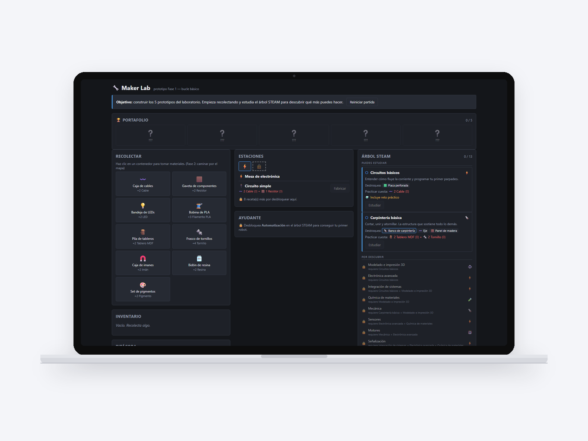
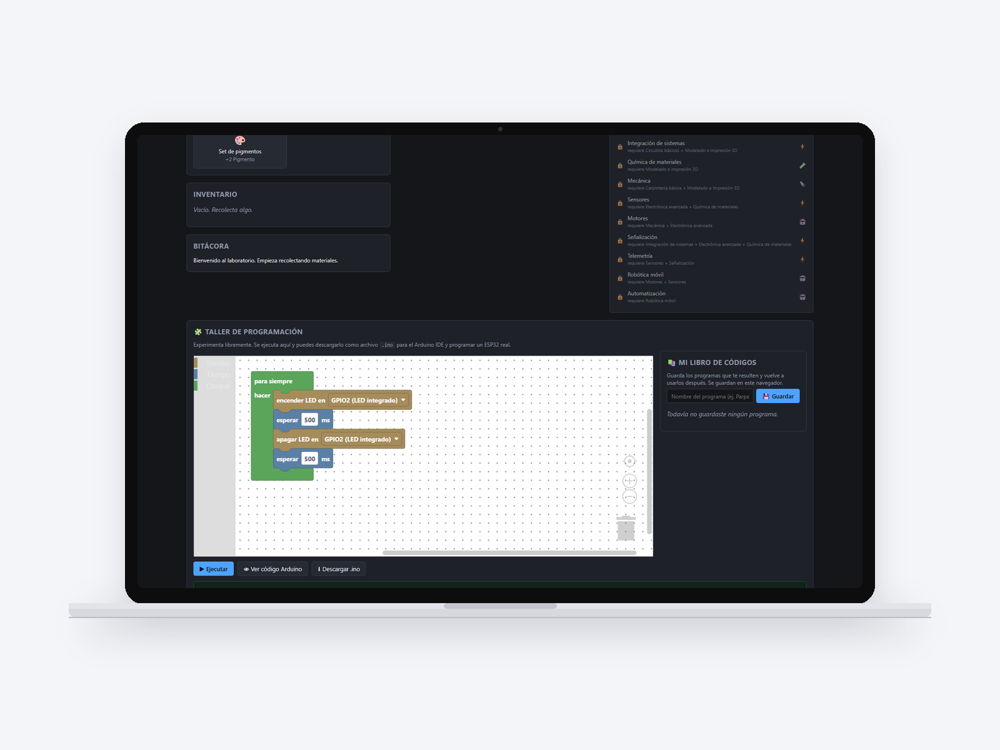
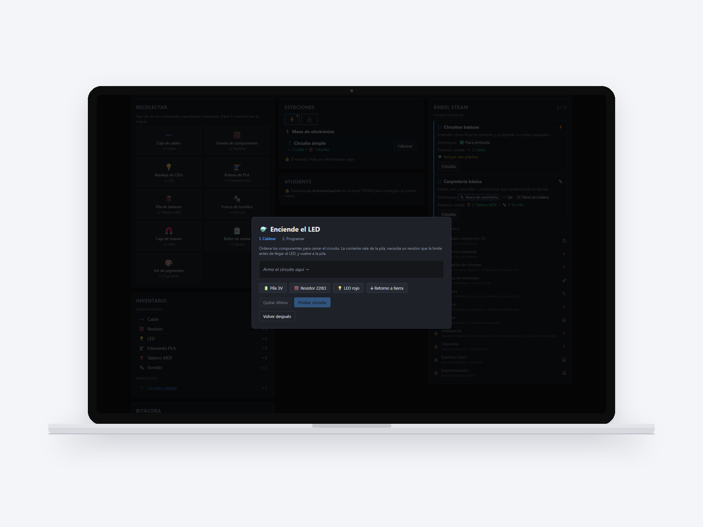

Personal project
A maker lab game where block programming exports Arduino code that really works.

A web game set in a school maker lab: the student collects materials, fabricates parts, sets up workstations and programs hardware with blocks. What sets it apart from any block programming game is that the code those blocks produce is real Arduino, ready to load onto a microcontroller. The bridge between the game and the physical workshop is the whole point. Thirteen knowledge nodes, five stations, twenty-three fabrication recipes and five prototypes as goals.
The Arduino code generator is written by hand. Libraries that do this already exist, but they are all abandoned: the best known has not been touched since 2018 and another does not even have a clear license. Rewriting it was cheaper than inheriting a problem.
And the game does not stop at collecting and fabricating: studying a node brings up a real hands-on challenge. The first one asks you to build a circuit (battery, resistor, LED, return to ground) in the right order and only then program it. In other words, the electronics mistake is made on screen before it is made with real components, which is exactly what a simulator is for in a classroom.
The programming workshop is not decorative: the blocks run against an ESP32 simulated on screen (with its real pins, GPIO2 and the rest) and the same program can be viewed as Arduino code or downloaded as an .ino file to load onto a physical board. That is the complete bridge, from block to board, without leaving the browser.
The most unusual thing about the project is not the game, it is how it is verified. There are two generative tests: a solver that goes through the entire progression tree and detects unreachable content or circular dependencies before anyone plays, and a bot that plays the full game against the game's real logic. It was checked by deliberately breaking an unlock. The energy system and game saving are still missing: today progress is lost on reload, which in a classroom is fatal.

